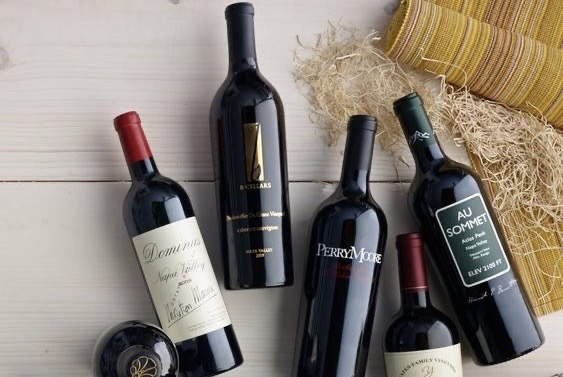
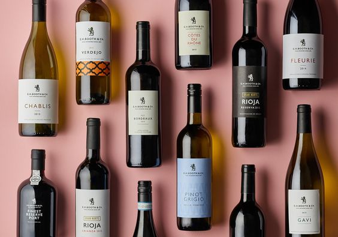
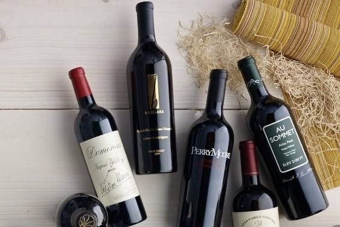
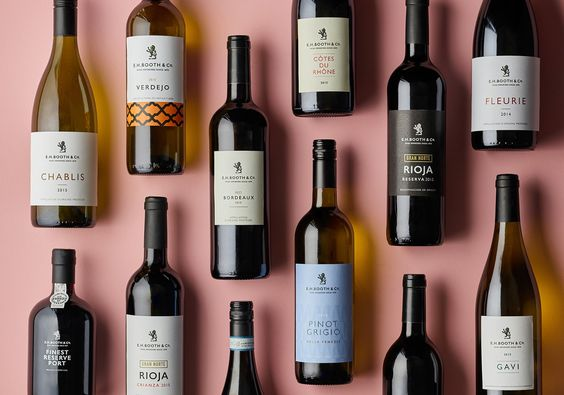

【龍舌蘭】
$99000
【簡介】
以其材料命名，使用龍舌蘭草的莖為原料而製成的蒸餾酒， 是墨西哥原生的酒品。龍舌蘭屬於多肉植物的一種， 外觀長得像巨大的鳳梨，而龍舌蘭的莖又稱為龍舌蘭心（Piña）， 含有大量的糖份，非常適合釀酒。
【口感】
口感上來說，龍舌蘭富含草本清香， 年輕的龍舌蘭有柑橘、咖啡的香氣， 陳年後的龍舌蘭則口感更為溫潤， 有與威士忌相似的木桶風味。


以其材料命名，使用龍舌蘭草的莖為原料而製成的蒸餾酒， 是墨西哥原生的酒品。龍舌蘭屬於多肉植物的一種， 外觀長得像巨大的鳳梨，而龍舌蘭的莖又稱為龍舌蘭心（Piña）， 含有大量的糖份，非常適合釀酒。
口感上來說，龍舌蘭富含草本清香， 年輕的龍舌蘭有柑橘、咖啡的香氣， 陳年後的龍舌蘭則口感更為溫潤， 有與威士忌相似的木桶風味。
琴酒透過蒸餾將原料風味封存調和於酒液之中， 不同原料的香氣分子揮發的順序殊異，也讓琴酒氣味如同香水。 每款琴酒因為添加原枓、使用基酒、酒精濃度各自不同，品飲變化度也相當多樣，這正是琴酒迷人之處。
琴酒氣味如同香水般擁有前調（Top Notes）、 中調（Heart Notes）、後調（Base Notes）； 前調大多是清新柑橘氣味，中調有著花果香氣， 後調則是辛香料、植物根部、木質感或麝香。
於白蘭地於廣義上， 是任何以水果作基酒蒸餾製成的， 再經蒸餾，酒精濃度達35%-60%的烈酒， 都可以叫作白蘭地，除了常見以葡萄釀製的白蘭地， 還有蘋果白蘭地(Calvados)及櫻桃白蘭地(Kirsch)等
口感都是，白蘭地是由葡萄釀成稍，尾韻稍有水果味，

最為出名的葡萄酒品種，在品酒會上， 往往是壓軸的葡萄酒款。 就連號稱紅葡萄之王的卡本內蘇維濃都要閃邊站。 奔放的水果香氣伴隨濃濃的香料味，加上厚重的酒體， 你很難忽略它的存在。
紫羅蘭、黑莓藍莓等漿果、以及巧克力、咖啡、黑胡 椒，都是常在席拉中常見的香氣。
炎炎夏日配上一杯冰涼的玫瑰酒不再只是潮流， 更加是愛酒之人夏日必備之選。玫瑰酒在任何場合都有出色表現， 因為它可以輕易配搭不同食物，能喝上一杯果香宜人、清新冰涼的玫瑰酒， 絕對可以令您的夏日更添愜意。
口感輕盈、清新、優雅劃上等號，淺淺的玫瑰酒色配上宜人的紅果香絕對是視覺、嗅覺和味覺的三重享受。
世界上最受歡迎的白葡萄品種之一， 其對氣候強大的適應力，世界各地都可以看到它的蹤影。 隨著風土條件與釀造師風格的不同，夏多內釀造的白酒可說是千變萬化， 從法國香檳區的白中白香檳，到夏布利 那帶有礦石味與檸檬氣,息的清爽滋味，又或是美國釀造，浸泡橡木桶後圓潤豐滿的奶油味， 夏多內在每個地方都有不同的際遇。
檸檬，蘋果，杏桃，鳳梨，百香果，桃子，柑桔和李子都是夏多內中可能出現的氣息。

Moet & Chandon Brut Impérial是酩悅香檳酒廠的旗艦商品， 最具代表性的特徵是它活潑生動的果香，在味蕾上的表現又相當的優雅細膩。
香氣結合了梨子、桃子、蘋果的白果香、柑橘果香、淡淡的花香， 優雅的奶油餅乾及堅果香。口感濃郁滑順，最後帶有清新爽口的感覺， 達到香檳最完美的境界。